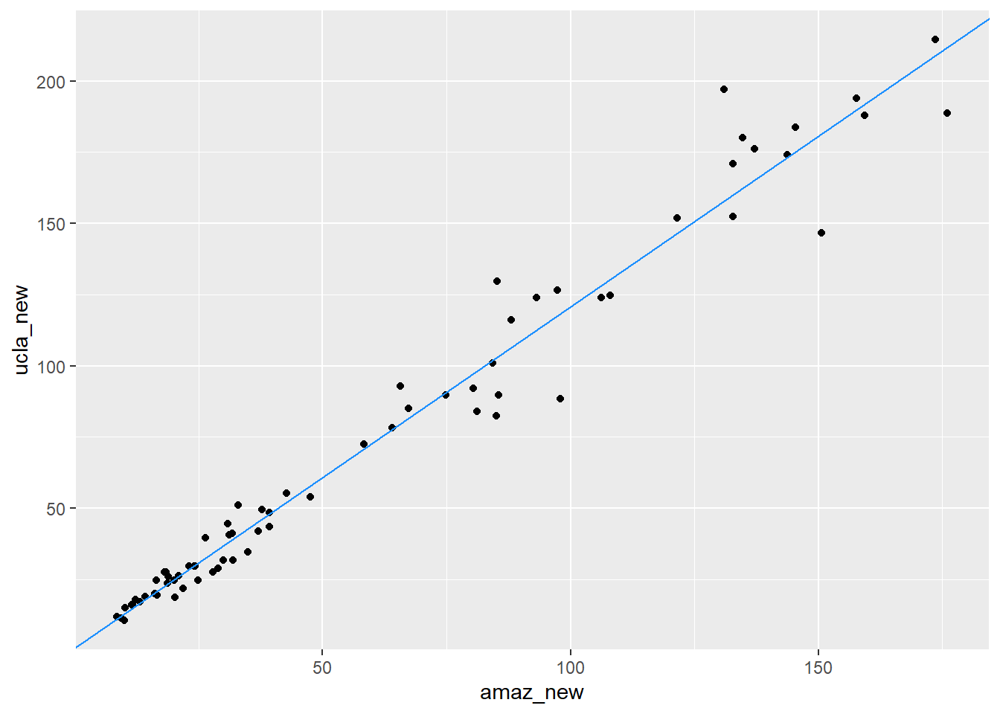
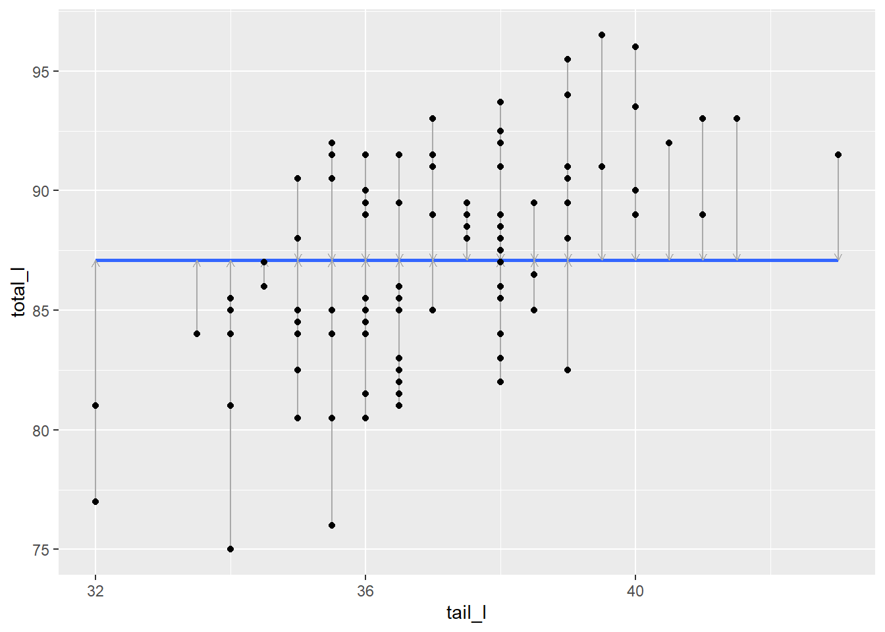
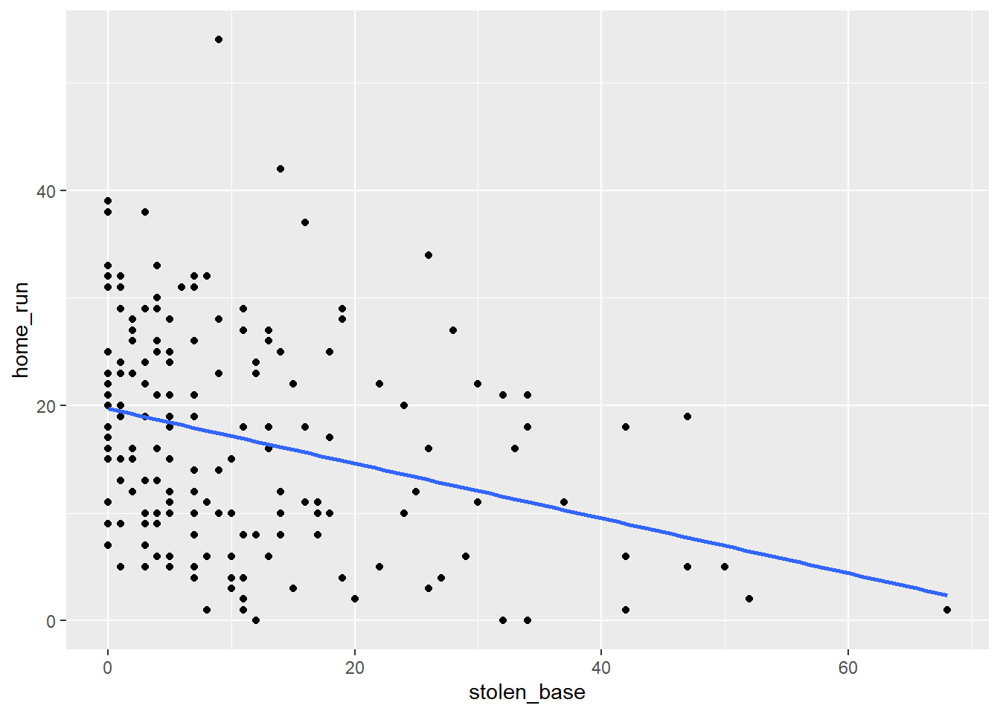

library(dplyr)
library(openintro)Regresyon Modelleri
İstatistikte modeller çok yaygındır. Çoğu durumda, bağımlı değişkenimizin değerinin, bağımsız değişkenimizin bir fonksiyonu artı biraz rastgele hata olduğunu varsayarız.
\[ bagimli = f(bagimsiz) + hata \]
Basit doğrusal regresyon modeli için, \(f\)’nin basitçe doğrusal bir fonksiyon şeklini aldığını varsayarız. Böylece modelimiz, bağımlı değişkeninin değerini bir doğruyu oluşturan bileşenler (bir kesişim ve bir eğim) cinsinden tanımlar:
\[ bağımlı = kesisim + egim \cdot bagimsiz + hata \]
Regresyon modelinde, populasyon parametrelerini temsil etmek için kesişim (\(\beta_0\)) ve eğim (\(\beta_1\)) için Yunan harfleri kullanırız.
Hata terimi genellikle \(\epsilon\) ile gösterilir.
\[ Y = \beta_0 + \beta_1 \cdot X + \epsilon , \qquad \epsilon \sim N(0, \sigma_\epsilon) \]
Verilerle populasyon regresyon denklemini tahmin ettiğimizde, kesişim ve eğim değerlerimizin gerçek populasyon parametrelerinin tahminleri olduğunu belirtmeliyiz.
\(Y\) yerine \(\mathbf{\hat{y}}\) kullanılır (tahmin edilen ortalama tepki).
Hata terimleri (\(\epsilon\)) kaldırılır (bireysel tepkileri değil, ortalama tepkiyi tahmin ediyoruz).
\(\beta_0\) yerine \(\mathbf{\widehat{\beta_0}}\) (kesişim tahmini) kullanılır.
\(\beta_1\) yerine \(\mathbf{\widehat{\beta_1}}\) (eğim tahmini) kullanılır.
Ortaya çıkan model:
\[ \hat{y} = \hat{\beta}_0 + \hat{\beta}_1 \cdot X \]
Verilerde gözlemlenen değer (\(Y\)) ile regresyon çizgisinden tahmin edilen değer (\(\hat{Y}\)) arasındaki farka “artık” denir.
\[ e = Y - \hat{Y} \]
Regresyon çizgisinin üzerindeki gözlemler, tahmin edilen değerlerini aşmıştır ve pozitif artığa sahiptir.
Regresyon çizgisinin altındaki değerler, tahmin edilen değerlerinden küçüktür ve negatif artığa sahiptir.
Artıklar (\(e\)), populasyon regresyon denklemindeki (\(\epsilon\)) tahminleridir.
1 En Küçük Kareler Prosedürünün Özellikleri
En küçük kareler prosedürü her zaman benzersiz bir çözüm bulur ve regresyon çizgisi her zaman şu iki özelliğe sahiptir:
Artıkların toplamı her zaman 0’dır.
Ortalama nokta \((\bar{x}, \bar{y})\) her zaman regresyon çizgisinin üzerindedir.
2 Temel Kavramlar
\(\mathbf{\hat{Y}}\): Verilen bir \(X\) değeri için tepkinin ortalama değeridir (en iyi tahminimiz).
\(\mathbf{\hat{\beta}}\)’lar: Gerçek, bilinmeyen \(\beta\)’ların tahminleridir.
Artıklar (\(e\)’ler): Gerçek, bilinmeyen hatanın (\(\epsilon\)’ler) tahminleridir.
Aşağıdaki doğrusal regresyon modelini ele alalım:
\[ Y = \beta_0 + \beta_1 \cdot X + \epsilon , \epsilon \sim N(0, \sigma_{\epsilon}) ,. \] Eğim katsayısı \(\mathbf{\beta_1}\) (bağımsız değişken \(X\) ile çarpılan parametredir).
ABD eyaletlerindeki lise mezuniyet oranının (\(hs_{grad}\)) bir fonksiyonu olarak yoksulluk oranı (\(poverty\)) için tahmin edilen model:
\[\widehat{poverty} = 64.594 - 0.591 \cdot hs_{grad}\]
Hampshire County’de (Western Massachusetts) lise mezuniyet oranı %92.4’tür. Bu, Hampshire County’deki ortalama yoksulluk oranının ne olmasının beklendiği anlamına gelir?
Çözüm: \(hs_{grad}\) yerine 92.4’ü koyarak \(\widehat{poverty}\) değerini hesaplarız.
\(\widehat{poverty} = 64.594 - 0.591 \cdot 92.4\)
\(\widehat{poverty} \approx 64.594 - 54.608\)\(\widehat{poverty} \approx 9.986 \approx 10.0\%\)
Cevap: Yaklaşık %10.0 olması beklenmektedir (Beklenen değer olduğunu belirtmek önemlidir).
Basit doğrusal regresyon modelinin eğimi (\(b_1\)) ve kesişimi (\(b_0\)), temel özet istatistiklerden hesaplanabilir:Eğim (\(b_1\))
\[ b_1 = r_{x,y} \cdot \frac{s_y}{s_x} \]
\(r_{x,y}\): \(x\) ve \(y\)’nin korelasyonu (cor()).
\(s_x, s_y\): \(x\) ve \(y\)’nin standart sapması (sd()).
- Kesişim (\(b_0\)): Ortalama nokta \((\bar{x}, \bar{y})\) her zaman regresyon çizgisinin üzerindedir:
\[ \bar{y} = b_0 + b_1 \cdot \bar{x} \implies b_0 = \bar{y} - b_1 \cdot \bar{x} \]
midiPISAveri setini ODOKUMA1 (\(y = ODOKUMA1\)) ve OKUMAZZEVK (\(x = OKUMA_ZEVK\)) için \(\mathbf{b_1}\) eğimini ve \(\mathbf{b_0}\) kesişimini bulun.
load("data/midiPISA.rda")
midiPISA <- na.omit(midiPISA)Aşağıdaki bdims_summary tablosu özet istatistikleri içermektedir:
midiPISA_ozet <- midiPISA |>
summarize(N = n(), r = cor(ODOKUMA1, OKUMA_ZEVK),
mean_ODOKUMA1 = mean(ODOKUMA1), sd_ODOKUMA1 = sd(ODOKUMA1),
mean_OKUMA_ZEVK = mean(OKUMA_ZEVK), sd_OKUMA_ZEVK = sd(OKUMA_ZEVK))
# Tablonun içeriği:
glimpse(midiPISA_ozet)Rows: 1
Columns: 6
$ N <int> 6655
$ r <dbl> 0.2240121
$ mean_ODOKUMA1 <dbl> 466.3947
$ sd_ODOKUMA1 <dbl> 86.84393
$ mean_OKUMA_ZEVK <dbl> 0.6847341
$ sd_OKUMA_ZEVK <dbl> 0.9752238print(midiPISA_ozet)# A tibble: 1 × 6
N r mean_ODOKUMA1 sd_ODOKUMA1 mean_OKUMA_ZEVK sd_OKUMA_ZEVK
<int> <dbl> <dbl> <dbl> <dbl> <dbl>
1 6655 0.224 466. 86.8 0.685 0.975Şimdi, mutate() kullanarak slope (eğim) ve intercept (kesişim) sütunlarını ekleyelim.
midiPISA_ozet %>%
mutate(
# Eğim (slope) hesaplaması
egim = r * sd_ODOKUMA1 / sd_OKUMA_ZEVK,
# Kesişim (intercept) hesaplaması: b0 = y_bar - b1 * x_bar
kesisim = mean_ODOKUMA1 - egim * mean_OKUMA_ZEVK
) %>% select(kesisim, egim)lm(midiPISA, formula = ODOKUMA1 ~ OKUMA_ZEVK)
Call:
lm(formula = ODOKUMA1 ~ OKUMA_ZEVK, data = midiPISA)
Coefficients:
(Intercept) OKUMA_ZEVK
452.74 19.95 3 Regresyon Modellerini Yorumlama
UCLA’daki bazı rastgele seçilmiş dersler için gereken 73 ders kitabı hakkında veri toplanmıştır. Her kitabın UCLA kitapçısındaki (ucla_new) ve Amazon.com’daki (amaz_new) perakende fiyatları bilinmektedir.
UCLA kitapçısındaki kitap fiyatlarıyla hangi faktörler ilişkilidir?
Kitapların Amazon fiyatı (x) ile UCLA kitapçısı fiyatı (y) arasındaki ilişki güçlü, pozitif ve doğrusaldır.
Bu güçlü ilişki, regresyon modellemesi için iyi bir başlangıçtır.
Regresyon modelini R’da lm() fonksiyonu ile oluşturabiliriz:
lm(ucla_new ~ amaz_new, data = textbooks)
Call:
lm(formula = ucla_new ~ amaz_new, data = textbooks)
Coefficients:
(Intercept) amaz_new
0.929 1.199 Çıktıdan elde edilen katsayılar:
Kesişim (\(\hat{\beta}_0\)): $0.929
Eğim (\(\hat{\beta}_1\)): $1.199
Tahmin edilen UCLA fiyatını \((\widehat{ucla_{new}})\) Amazon fiyatı \((amazon_{new})\) cinsinden ifade eden denklem şöyledir:
\[ \widehat{ucla\_{new}} = 0.929 + 1.199 \cdot amazon\_{new} \]
(\(\hat{\beta}_1 = 1.199\))
Yorum: Amazon’un bir kitap için talep ettiği fiyattaki her bir ek $1’lık artış için, UCLA kitapçısındaki kitapların ortalama fiyatının yaklaşık $1.20 artması beklenir.
Bu, ortalama olarak, UCLA kitapçısındaki kitap fiyatının Amazon’daki karşılık gelen fiyattan yaklaşık %20 daha yüksek olduğu anlamına gelir (\(1.20\) katı).
Unutmayın: Eğim, açıklayıcı değişkendeki bir birimlik değişikliğe karşılık, bağımlı değişkendeki (yanıt) tahmini ortalama değişimi gösterir.
(\(\hat{\beta}_0 = 0.929\))
- Yorum: Amazon’da $0 olan bir kitabın, UCLA kitapçısında ortalama $0.93’a mal olması beklenir.
Dikkat: Bu değer, veri kümesindeki Amazon fiyatlarının aralığının dışında (en düşük fiyat $8.60’dı) olduğu için alakasızdır ve ekstrapolasyon (verinin aralığı dışındaki tahmin) tehlikesini taşır.
yanıt değişkeninin birimi başına açıklayıcı değişkenin birimidir (Bu örnekte: Dolar/Dolar).
Ölçek değişimi, katsayıları değiştirir ancak temel ilişkiyi değiştirmez. Örneğin, Amazon fiyatını sent cinsinden kullanırsak:
textbooks <- textbooks |> mutate(amaz_new_cents = amaz_new * 100)
lm(ucla_new ~ amaz_new_cents, data = textbooks)
Call:
lm(formula = ucla_new ~ amaz_new_cents, data = textbooks)
Coefficients:
(Intercept) amaz_new_cents
0.92897 0.01199 - Eğim: \(\approx 0.01199\) *
Yorum: Amazon fiyatındaki her bir ek centlik artış,
UCLA fiyatında ortalama $0.01199 (yaklaşık 1.2 cent) artışa neden olur. Temel ilişki (\(1.20\) katı) korunmuştur.
4 🚨 Yorumlama Hataları
Regresyon modelinin yorumlanmasında sık yapılan hatalar şunlardır:
Nedensellik İması: Regresyon, yalnızca bir ilişki veya ilişkilendirme gösterir, neden-sonuç ilişkisini kanıtlamaz.
Değişken Rollerinin Değiştirilmesi: Eğim, \(x\)’teki değişime karşılık \(y\)’deki ortalama değişimi gösterir. \(y\)’deki değişime karşılık \(x\)’teki değişimi göstermez.
Yüzde Değişim vs. Yüzde Puan Değişimi: Yüzde (örneğin, bir değişkenin %50’si) ile yüzde puanı (örneğin, %10’dan %12’ye 2 yüzde puanı artış) karıştırılmamalıdır, özellikle oranlar söz konusu olduğunda.
5 🛠️ Basit Lineer Modelleri Kurmak
R’da bir regresyon modelini oluşturmak için lm() kullanılır.
Örnek 1: ODOKUMA1 (okuma puanlarının) OKUMA_ZEVK bir fonksiyonu olarak (midiPISA veri kümesi) lm(ODOKUMA1 ~ OKUMA_ZEVK, data = midiPISA)
lm(), coef(), summary(), fitted.values(), residuals(), predict(), augment()
lm() fonksiyonunun çıktısı, lm sınıfından bir model nesnesidir (books_mod). Bu nesne, model hakkındaki tüm bilgileri depolar.
books_mod <- lm(ucla_new ~ amaz_new, data = textbooks)
class(books_mod)[1] "lm"Katsayılar (coef()) Sadece kesişim ve eğim katsayılarını bir vektör olarak döndürür
coef(books_mod)(Intercept) amaz_new
0.9289651 1.1990014 Modelin tamamına ait istatistiksel çıktı
summary(books_mod)
Call:
lm(formula = ucla_new ~ amaz_new, data = textbooks)
Residuals:
Min 1Q Median 3Q Max
-34.785 -4.574 0.577 4.012 39.002
Coefficients:
Estimate Std. Error t value Pr(>|t|)
(Intercept) 0.92897 1.93538 0.48 0.633
amaz_new 1.19900 0.02519 47.60 <2e-16 ***
---
Signif. codes: 0 '***' 0.001 '**' 0.01 '*' 0.05 '.' 0.1 ' ' 1
Residual standard error: 10.47 on 71 degrees of freedom
Multiple R-squared: 0.9696, Adjusted R-squared: 0.9692
F-statistic: 2266 on 1 and 71 DF, p-value: < 2.2e-16Orijinal veri kümesindeki her bir gözlem için modelin tahmin ettiği \(\hat{y}\) (yordanmıs değerleri) döndürür.
fitted.values(books_mod) 1 2 3 4 5 6 7 8
34.44105 38.26587 39.29701 14.74146 17.96678 13.12281 24.98093 20.90433
9 10 11 12 13 14 15 16
128.32287 16.82772 36.83906 106.54900 23.05054 20.67652 117.68772 57.89352
17 18 19 20 21 22 23 24
90.77014 160.12038 146.60764 130.42112 14.92131 23.63805 15.60474 27.24705
25 26 27 28 29 30 31 32
38.26587 35.64006 20.29284 46.19127 39.03323 40.46004 37.94214 102.84409
33 34 35 36 37 38 39 40
42.83406 118.37115 98.26390 12.31948 13.15878 162.42247 173.28542 211.95321
41 42 43 44 45 46 47 48
181.53455 175.26377 209.02765 157.99815 189.98751 165.39599 30.84405 191.90591
49 50 51 52 53 54 55 56
28.58993 26.15595 52.10235 48.13365 103.08389 112.59197 81.74166 160.14436
57 58 59 60 61 62 63 64
30.07669 30.84405 103.38364 13.01490 79.73933 101.95682 11.24038 70.97463
65 66 67 68 69 70 71 72
97.29271 77.77297 45.33998 25.16078 48.09768 32.54663 29.93281 23.37427
73
22.77477 Gerçek \(y\) değerleri ile tahmin edilen \(\hat{y}\) değerleri arasındaki farkları (\(e_i = y_i - \hat{y}_i\)) döndürür. En küçük kareler yöntemi ile oluşturulan modelde, artıkların ortalaması her zaman sıfırdır (teknik olarak sıfıra çok yakındır).
residuals(books_mod) 1 2 3 4 5 6
-6.77105468 2.32413081 -7.61701041 1.25853860 0.98322479 1.82719051
7 8 9 10 11 12
-0.28093350 -1.40432868 -4.48286560 0.17227613 -5.20905751 9.45100013
13 14 15 16 17 18
4.61945878 4.02348159 8.98227697 -3.99352239 -1.04014123 10.87961683
19 20 21 22 23 24
5.39236280 -5.62111808 1.07868839 2.31194809 2.39525758 -5.51704618
25 26 27 28 29 30
2.32413081 -6.69005609 -0.34283796 3.25873144 2.05676990 10.48995821
31 32 33 34 35 36
6.55786119 -20.39408550 -8.23406459 -29.95115384 -14.26390008 -1.06947854
37 38 39 40 41 42
1.84122047 17.60753411 0.71458128 -23.37321441 -34.78454847 8.48622894
43 44 45 46 47 48
5.47234904 39.00184934 4.01249154 10.85401060 -6.14405043 -3.90591073
49 50 51 52 53 54
1.11007224 0.08404511 3.02765446 -4.57365085 26.51611422 11.24803299
55 56 57 58 59 60
3.37833944 -7.66436320 -0.37668952 -6.14405043 -13.67363613 -2.51489936
61 62 63 64 65 66
13.14067180 -1.07682445 0.70962274 1.49537216 -5.19270894 0.57703413
67 68 69 70 71 72
-3.33997755 -6.41078371 0.36231919 7.00336756 -0.28280935 0.38572840
73
4.92522911 mean(residuals(books_mod))[1] -5.944398e-17broom paketindeki augment() fonksiyonu, orijinal veriyi uyarlanmış değerler, artıklar ve diğer model teşhis bilgileriyle birlikte içeren düzenli bir veri çerçevesi (data.frame) döndürür. Bu, model çıktılarını tidyverse ortamında analiz etmeyi kolaylaştırır.
library(broom) Warning: package 'broom' was built under R version 4.4.3augment(books_mod)0.929 + 1.199*27.95[1] 34.44105 27.67 -34.44105[1] -6.77105Modelimizi, orijinal veri setinde olmayan (“örneklem dışı”) yeni gözlemler için tahminler yapmak amacıyla kullanabiliriz. Bunun için predict() fonksiyonuna tahmin yapılacak yeni veriyi newdata argümanıyla bir veri çerçevesi olarak iletmeliyiz. Bu yeni veri çerçevesi, modelde kullanılan açıklayıcı değişkenle aynı isme sahip bir sütun içermelidir.
new_data <- data.frame(amaz_new = 8.49)
predict(books_mod, newdata = new_data) 1
11.10849 Amazon fiyatı $8.49 olan bir kitap için UCLA fiyat tahmini: Çıktı: Beklenen fiyat yaklaşık $11.11
5.1 Regresyon Çizgisini Elle Ekleme
geom_smooth() yerine geom_abline() ile de regresyon çizgisini bir serpilme grafiğine ekleyebiliriz.
books_mod_coefs <- coef(books_mod) |>
t() |>
as.data.frame()
library(ggplot2)Warning: package 'ggplot2' was built under R version 4.4.3ggplot(data = textbooks, aes(x = amaz_new, y = ucla_new )) +
geom_point() +
geom_abline(data = books_mod_coefs,
aes(intercept = `(Intercept)`, slope = amaz_new), color = "dodgerblue")
Regresyon modeli, en küçük kareler yöntemi kullanılarak, artıkların karelerinin toplamını (SSE) minimize eden çizgiyi bulur. Modelin ne kadar iyi çalıştığını ölçmenin temel yolu, tipik bir hatanın (artığın) büyüklüğüne bakmaktır.
Artıkların ortalaması her zaman sıfır olduğu için, modelin toplam hatasını ölçmek için artıkların karelerinin toplamı (SSE) kullanılır.
books_mod |>
augment() |>
summarize(SSE = sum(.resid^2),
SSE_also = (n() - 1) * var(.resid))- Yorum: SSE, modelin gözlemlerden ne kadar “saptığını” yakalayan tek bir sayıdır. Ancak birimleri karesi alınmış olduğundan yorumlanması zordur.
Modelin tipik hatasını yanıt değişkeninin birimlerinde ölçen en yaygın yol ortalama hata kareleri toplamı kökü (RMSE) veya regresyon çıktısında görünen adıyla Artık Standart Hatası’dır. Bu, esasen artıkların standart sapmasıdır.
\[ RMSE = \sqrt{ \frac{\sum_i{e_i^2}}{d.f.} } = \sqrt{ \frac{SSE}{n-2} } \]
\(n-2\) terimi, basit regresyonda serbestlik derecesidir (iki katsayı, \(\hat{\beta}_0\) ve \(\hat{\beta}_1\), tahmin edildiği için).
Yorum: RMSE (veya Artık Standart Hatası), gözlemlenen yanıt değişkeni değeri ile modelin tahmin ettiği değer arasındaki tipik farkı (yanıltıcı mesafe) yanıt değişkeninin orijinal birimlerinde verir.
R bir regresyon modelinin summary()’sini gösterdiğinde, “artık standart hatasını” (residual standard error) gösterir. Bu, RMSE’dir. Keseli sıçanlar için bu, modelimizin tahmin edilen vücut uzunluğunun tipik olarak gerçeğin yaklaşık 3.57 santimetre yakınında olduğunu söyler.
total_tail_mod <- lm(total_l ~ tail_l, data = possum)
summary(total_tail_mod)
Call:
lm(formula = total_l ~ tail_l, data = possum)
Residuals:
Min 1Q Median 3Q Max
-9.2100 -2.3265 0.1792 2.7765 6.7900
Coefficients:
Estimate Std. Error t value Pr(>|t|)
(Intercept) 41.0371 6.6568 6.165 1.43e-08 ***
tail_l 1.2443 0.1796 6.927 3.94e-10 ***
---
Signif. codes: 0 '***' 0.001 '**' 0.01 '*' 0.05 '.' 0.1 ' ' 1
Residual standard error: 3.572 on 102 degrees of freedom
Multiple R-squared: 0.32, Adjusted R-squared: 0.3133
F-statistic: 47.99 on 1 and 102 DF, p-value: 3.935e-10Possom (Gövde Uzunluğu ~ Kuyruk Uzunluğu)cm\(\approx 3.57\)T
Tahmin edilen gövde uzunluğu, gerçek değerden tipik olarak \(3.57\) cm sapar.
Ders kitapları için artık standart hatası 10.47’dir. Serpilme grafiğinden ders kitabı modelinin uygunluğunun keseli sıçan modelinin uygunluğundan çok daha iyi göründüğü halde, bu rakam o kadar da kullanışlı görünmüyor. Bu iki fikri uzlaştırmak bir sonraki konudur.
books_mod <- lm(ucla_new ~ amaz_new, data = textbooks)
summary(books_mod)
Call:
lm(formula = ucla_new ~ amaz_new, data = textbooks)
Residuals:
Min 1Q Median 3Q Max
-34.785 -4.574 0.577 4.012 39.002
Coefficients:
Estimate Std. Error t value Pr(>|t|)
(Intercept) 0.92897 1.93538 0.48 0.633
amaz_new 1.19900 0.02519 47.60 <2e-16 ***
---
Signif. codes: 0 '***' 0.001 '**' 0.01 '*' 0.05 '.' 0.1 ' ' 1
Residual standard error: 10.47 on 71 degrees of freedom
Multiple R-squared: 0.9696, Adjusted R-squared: 0.9692
F-statistic: 2266 on 1 and 71 DF, p-value: < 2.2e-16Ders Kitapları (UCLA ~ Amazon Fiyatı)$\(\approx 10.47\)
Tahmin edilen UCLA fiyatı, gerçek değerden tipik olarak $10.47 sapar.
6 Model Uygunluğu
Farklı birimlere sahip modellerin uyumunu karşılaştırmak için birimsiz bir ölçüye ihtiyacımız var. Bu, Belirtme Katsayısı veya yaygın adıyla \(R^2\)’dir.
\(R^2\)’yi anlamak için bir kıyaslama modeli hayal ederiz: Boş Model.
Boş Model, açıklayıcı değişkeni kullanmadan yanıt değişkenini tahmin etmeniz gerekseydi seçeceğiniz modeldir.
Bu model, tüm gözlemler için \(\hat{y} = \bar{y}\) tahminini yapar.
Bu modelin hatası (kare artıkların toplamı) Toplam Kareler Toplamı (SST) olarak adlandırılır. SST, yanıt değişkenindeki toplam değişkenliği ölçer.
\[ SST = \sum_{i=1}^{n} (y_i - \bar{y})^2 \]
\(R^2\), regresyon modelimizin (\(SSE\)) hatasını, boş modelin (\(SST\)) hatasına kıyasla ne kadar azalttığını gösterir.
\[ R^2 = 1 - \frac{SSE}{SST} = 1 - \frac{\text{Açıklanamayan Değişkenlik}}{\text{Toplam Değişkenlik}} \]
Yorum: \(R^2\), yanıt değişkenindeki değişkenliğin modelimiz tarafından açıklanan oranıdır (yüzdesi).
\(R^2\) değeri 0 ile 1 arasında değişir.
\(R^2=0\): Modelimiz, boş modelden daha iyi değildir (hiçbir değişkenliği açıklamaz).
\(R^2=1\): Modelimiz, yanıttaki değişkenliğin tamamını açıklar (tüm noktalar çizgidedir).
Örnekler:
Possom Modeli (\(R^2 \approx 0.32\)): Gövde uzunluğundaki değişkenliğin %32’si kuyruk uzunluğu ile açıklanır.
Ders Kitabı Modeli (\(R^2 \approx 0.97\)): UCLA fiyatındaki değişkenliğin %97’si Amazon fiyatı ile açıklanır.
\(R^2\) ve Korelasyon: Tek bir açıklayıcı değişkenli basit doğrusal regresyonda, \(R^2\) değeri, korelasyon katsayısının karesine eşittir (\(R^2 = r_{x, y}^2\)).
7 Kaldıraç (Leverage) ve Etki (Influence)
Regresyon analizinde, bazı gözlemler modelin eğimini diğerlerinden daha fazla etkileyebilir. Bu noktaları incelemek için iki ana kavram kullanılır: Kaldıraç ve Etki.
7.1 1. Kaldıraç (Leverage)
Tanım: Bir gözlemin kaldıracı, yalnızca bağımsız değişkenin (\(x\)) değerine bağlıdır. Bir noktanın bağımsız değişkenin ortalamasından ne kadar uzak olduğunu ölçer.
\(x\) ekseni boyunca merkezden uzak olan noktalar yüksek kaldıraca sahiptir.
Kaldıraç,
augment()çıktısındaki.hatsütununda bulunur.
7.2 2. Etki (Influence)
Tanım: Bir gözlemin etkisi, regresyon çizgisinin eğimini ne kadar değiştirdiğini ölçer.
Yüksek etki, hem yüksek kaldıraç hem de büyük bir artık (model çizgisinden dikey olarak uzaklık) kombinasyonunu gerektirir.
7.3 3. Cook Mesafesi (Cook’s Distance)
Tanım: Kaldıraç ve artığı birleştirerek etkiyi ölçen tek bir sayıdır.
Yorum: Yüksek Cook mesafesi, noktanın modelin eğimini önemli ölçüde değiştirdiğini gösterir.
Cook mesafesi,
augment()çıktısındaki.cooksdsütununda bulunur.Örnek: Bir şehirde ev fiyatını (Y) evin büyüklüğüne (X = m²) göre tahmin eden basit bir doğrusal regresyon düşünelim.
Çoğu ev 100–200 m² aralığında, ancak bir tane çok büyük ev (örneğin 400 m²) var:
Bu ev, yüksek kaldıraçlı olur (çünkü x ekseninde uçtadır).
Eğer bu evin fiyatı beklenenden çok farklıysa (çok ucuz veya çok pahalıysa), yüksek etkili (influential) hale gelir
::: {.cell}
```{.r .cell-code}
library(tidyverse)
```
::: {.cell-output .cell-output-stderr}
```
Warning: package 'purrr' was built under R version 4.4.3
```
:::
::: {.cell-output .cell-output-stderr}
```
── Attaching core tidyverse packages ──────────────────────── tidyverse 2.0.0 ──
✔ forcats 1.0.0 ✔ stringr 1.5.1
✔ lubridate 1.9.4 ✔ tibble 3.2.1
✔ purrr 1.0.4 ✔ tidyr 1.3.1
✔ readr 2.1.5
── Conflicts ────────────────────────────────────────── tidyverse_conflicts() ──
✖ dplyr::filter() masks stats::filter()
✖ dplyr::lag() masks stats::lag()
ℹ Use the conflicted package (<http://conflicted.r-lib.org/>) to force all conflicts to become errors
```
:::
```{.r .cell-code}
library(broom) # Veri oluşturalım set# Gerekli paketler
library(tidyverse)
library(broom)
# Veri oluşturalım
set.seed(123)
data <- tibble(
size = c(runif(20, 100, 200), 400), # son ev çok büyük: 400 m²
price = c(2000 + 15 * runif(20, 100, 200), # ortalama ilişki
2000 + 15 * 400 + 50000) # büyük ev beklenenden pahalı
)
# Modeli kuralım
model <- lm(price ~ size, data = data)
# Kaldıraç (.hat) ve etki (Cook's distance) ekleyelim
aug <- augment(model)
# Veriye ekleyelim
# Grafik: kaldıraç ve etki gösterimi
ggplot(aug, aes(x = size, y = price)) +
geom_point(aes(size = .hat, color = .cooksd)) +
geom_smooth(method = "lm", se = FALSE, color = "blue") +
scale_color_gradient(low = "gray70", high = "red") +
labs(
title = "Kaldıraç ve Etki (Leverage & Influence) Örneği",
subtitle = "Büyük kırmızı nokta = yüksek kaldıraca ve yüksek etkiye sahip gözlem",
x = "Ev Büyüklüğü (m²)",
y = "Ev Fiyatı",
color = "Cook's Distance\n(Etki)",
size = "Leverage\n(Kaldıraç)"
) +
theme_minimal()
```
::: {.cell-output .cell-output-stderr}
```
`geom_smooth()` using formula = 'y ~ x'
```
:::
::: {.cell-output-display}
{width=672}
:::
:::
::: {.cell}
```{.r .cell-code}
plot(model, which = 4)
```
::: {.cell-output-display}
{width=672}
:::
:::8 🗑️ Aykırı Değerlerle Başa Çıkma
Etkili bir gözlemin modelinizin bilimsel değerini azalttığını belirlerseniz, ne yapabilirsiniz?
Çözüm: En bariz çözüm, aykırı değeri veri kümesinden çıkarmaktır.
Ancak: Bu kararı verirken bilimsel dürüstlükle hareket etmeli ve kendinize şu soruları sormalısınız:
Gerekçe nedir? Gözlemi kaldırmak için bilimsel veya mantıksal bir gerekçeniz var mı (örn. hatalı veri girişi, gözlemin ait olmadığı bir popülasyondan gelmesi)? “Sonuçlarımı iyileştirdiği için” iyi bir gerekçe değildir.
Çıkarım Kapsamı Nasıl Değişir? Aykırı değeri kaldırdığınızda, modelinizin sonuçları artık popülasyonun hangi alt kümesi için geçerlidir? (Örn. en zengin ülkeyi çıkarırsanız, sonuçlarınız artık en zengin ülkeler için geçerli olmaz.)
9 Model Uygunluklarını Karşılaştırma
9.1 Boş (Ortalama) Model
Model uygunluğunun kalitesini karşılaştırmanın bir yolu, birimsiz bir karşılaştırma yolu bulmaktır. Bunu yapmak için bir karşılaştırma noktası düşünmek faydalıdır.
Eğer bir keseli sıçanın vücut uzunluğunu tahmin etmek zorunda olsaydınız ve o keseli sıçan hakkında hiçbir bilginiz olmasaydı, tahmininiz ne olurdu?
Mantıklı bir seçim, tüm keseli sıçanların ortalama uzunluğu olacaktır. Bu, \(\hat{y} = \bar{y}\) olduğu bir model olarak düşünülebilir. Bu modele genellikle boş model (null model) denir. Bu modeli bir karşılaştırma noktası olarak kullanmak mantıklıdır, çünkü yapılması hiçbir içgörü gerektirmez ve daha kötü olabilecek makul bir model yoktur.
null_mod <- lm(total_l ~ 1, data = possum)
null_mod |>
augment() |>
mutate(tail_l = possum$tail_l) |>
ggplot(aes(x = tail_l, y = total_l)) +
geom_smooth(method = "lm", se = 0, formula = y ~ 1) +
geom_segment(aes(xend = tail_l, yend = .fitted),
arrow = arrow(length = unit(0.15, "cm")),
color = "darkgray") +
geom_point()
Boş modelin SSE’si, genellikle SST (Toplam Kareler Toplamı, Sum of Squares Total) olarak adlandırılır. Bu, yanıt değişkenindeki değişkenliğin bir ölçüsüdür. Bu değer 1913.826’dır.
null_mod |>
augment(possum) |>
summarize(SST = sum(.resid^2))Bu sayıyı, kuyruk uzunluğunu açıklayıcı değişken olarak kullanan keseli sıçan modelimizin SSE’si ile karşılaştırın. Bu durumda SSE, 1301.488’dir.
total_tail_mod |>
augment() |>
summarize(SSE = sum(.resid^2))Modelimizin SSE’sinin boş modelin SSE’sine oranı, modelimiz tarafından açıklanan değişkenliğin bir ölçüsüdür. Bu fikirler, genellikle \(\mathbf{R^2}\) olarak anılan “belirleme katsayısı” formülü ile yakalanır:
\[R^2 = 1 - \frac{SSE}{SST} = 1 - \frac{Var(e)}{Var(y)} \]Bu tanımdan dolayı, \(R^2\)’yi, yanıt değişkenindeki değişkenliğin modelimiz tarafından açıklanan oranı olarak yorumlarız. Bu, bir regresyon modelinin uygunluk kalitesinin en sık belirtilen ölçüsüdür.
Tek bir açıklayıcı değişkenli en küçük kareler regresyon modelleri için, \(R^2\) değeri, korelasyon katsayısının karesidir (\(r_{x, y}^2\)).
\(R^2\) değerini görmenin en kolay yolu, model nesnenize summary() işlevini uygulamaktır. Keseli sıçanlar için modelimiz, vücut uzunluğundaki değişkenliğin yaklaşık %32’sini açıklar.
summary(total_tail_mod)
Call:
lm(formula = total_l ~ tail_l, data = possum)
Residuals:
Min 1Q Median 3Q Max
-9.2100 -2.3265 0.1792 2.7765 6.7900
Coefficients:
Estimate Std. Error t value Pr(>|t|)
(Intercept) 41.0371 6.6568 6.165 1.43e-08 ***
tail_l 1.2443 0.1796 6.927 3.94e-10 ***
---
Signif. codes: 0 '***' 0.001 '**' 0.01 '*' 0.05 '.' 0.1 ' ' 1
Residual standard error: 3.572 on 102 degrees of freedom
Multiple R-squared: 0.32, Adjusted R-squared: 0.3133
F-statistic: 47.99 on 1 and 102 DF, p-value: 3.935e-10Ders kitapları için \(R^2\) değeri çok daha yüksektir - %97’dir. Gerçekten de, \(R^2\) karşılaştırması, ders kitabı modelinin ders kitabı verilerine keseli sıçan modelinin keseli sıçan verilerine olduğundan daha iyi oturduğu yönündeki grafiksel sezgimizi doğrulamaya yardımcı olur.
summary(books_mod)
Call:
lm(formula = ucla_new ~ amaz_new, data = textbooks)
Residuals:
Min 1Q Median 3Q Max
-34.785 -4.574 0.577 4.012 39.002
Coefficients:
Estimate Std. Error t value Pr(>|t|)
(Intercept) 0.92897 1.93538 0.48 0.633
amaz_new 1.19900 0.02519 47.60 <2e-16 ***
---
Signif. codes: 0 '***' 0.001 '**' 0.01 '*' 0.05 '.' 0.1 ' ' 1
Residual standard error: 10.47 on 71 degrees of freedom
Multiple R-squared: 0.9696, Adjusted R-squared: 0.9692
F-statistic: 2266 on 1 and 71 DF, p-value: < 2.2e-16Yüksek bir \(R^2\) tek başına “iyi” bir modele sahip olduğunuz anlamına gelmez ve düşük bir \(R^2\) “kötü” bir modele sahip olduğunuz anlamına gelmez. Düşük bir \(R^2\)’li bir model, karmaşık bir problem hakkında önemli içgörüler sağlayabilir.
“Esasen, tüm modeller yanlıştır, ancak bazıları kullanışlıdır” - George Box
9.2 \(R^2\) Yorumu
ABD eyaletlerindeki lise mezuniyet oranına göre yoksulluk oranı için regresyon modelinde bildirilen \(\mathbf{R^2}\), 0.464’tür. Bu değer nasıl yorumlanmalıdır?
Cevap: ABD eyaletleri arasındaki yoksulluk oranındaki değişkenliğin %46.4’ü, lise mezuniyet oranı ile açıklanabilir.
10 Olağandışı Noktalar
Daha önce, aykırı değerleri tanımlamayı öğrenmiştik. Şimdi, iki ilgili ama farklı kavramı tanıtarak bu anlayışı hassaslaştıracağız: Kaldıraç (Leverage) ve Etki (Influence).
Beyzbol oyuncularının çaldığı üs sayısı ile vurduğu home run sayısı arasındaki ilişkiyi inceleyen serpilme grafiğini hatırlayın.
10.1 Kaldıraç (Leverage)
Kaldıraç, bir gözlemin açıklayıcı değişkenin \((\mathbf{x})\) ortalamasından ne kadar uzakta olduğunun bir fonksiyonudur. Yani, serpilme grafiğinin merkezine (x-ekseni boyunca) yakın olan noktalar düşük kaldıraçlı, uzakta olan noktalar ise yüksek kaldıraçlıdır. Kaldıraç için \(y\)-koordinatı hiç önemli değildir. \[ h_i = \frac{1}{n} + \frac{(x_i - \bar{x})^2}{\sum_{i=1}^n (x_i - \bar{x})^2} \] Yüksek kaldıraca sahip gözlemler, açıklayıcı değişkenin aşırı değerleri nedeniyle, regresyon doğrusunun eğimi üzerinde önemli bir etkiye sahip olabilir veya olmayabilir. Böyle bir etkiye sahip olan gözleme etkili (influential) denir.
Etki (Influence) - Cook’s MesafesiCook’s mesafesi olarak bilinen bir ölçüm, etkiyi ölçmek için bu iki niceliği (kaldıraç ve artık) birleştirir.
regulars <- mlbbat10 |>
filter(at_bat > 400)
ggplot(data = regulars, aes(x = stolen_base, y = home_run)) +
geom_point() +
geom_smooth(method = "lm", se = 0)`geom_smooth()` using formula = 'y ~ x'
mod_hr_sb <- lm(home_run ~ stolen_base, data = regulars)
mod_hr_sb |>
augment() |>
select(home_run, stolen_base, .fitted, .resid, .hat, .cooksd) |>
slice_max(order_by = .cooksd, n = 5)Yüksek kaldıraç ve büyük artığın birleşimi etkiyi belirler.A
ykırı Değerlerle Başa ÇıkmakEtkili bir gözlemin regresyon doğrusunun eğimini modelinizin bilimsel değerini zayıflatacak şekilde etkilediğini belirlediğinizi varsayalım. Bu konuda ne yapabilirsiniz?Kısa cevap, aykırı değerleri çıkarmaktan başka yapabileceğiniz pek bir şey olmadığıdır. İstatistiksel modelleyici olarak bu bir karardır, ancak bu kararın sonuçlarını anlamanız ve iyi bir bilimsel inançla hareket etmeniz çok önemlidir.
Aykırı değerleri çıkarırken kendinize sormanız gereken ilk sorular şunlardır:
Gözlemi kaldırmak için gerekçe nedir? “Çünkü sonuçlarımı iyileştiriyor” iyi bir gerekçe değildir.Çıkarım kapsamı nasıl değişir? (Örn. En fakir ülkeleri çıkarırsanız, sonuçlarınız artık tüm ülkelere değil, sadece “fakir olmayan” ülkelere uygulanır.)
Aykırı değerlerin çıkarılması, bir modelin eğimini ve \(R^2\) değerini önemli ölçüde değiştirebilir. Şeffaflık ve güçlü bilimsel gerekçe anahtardır.